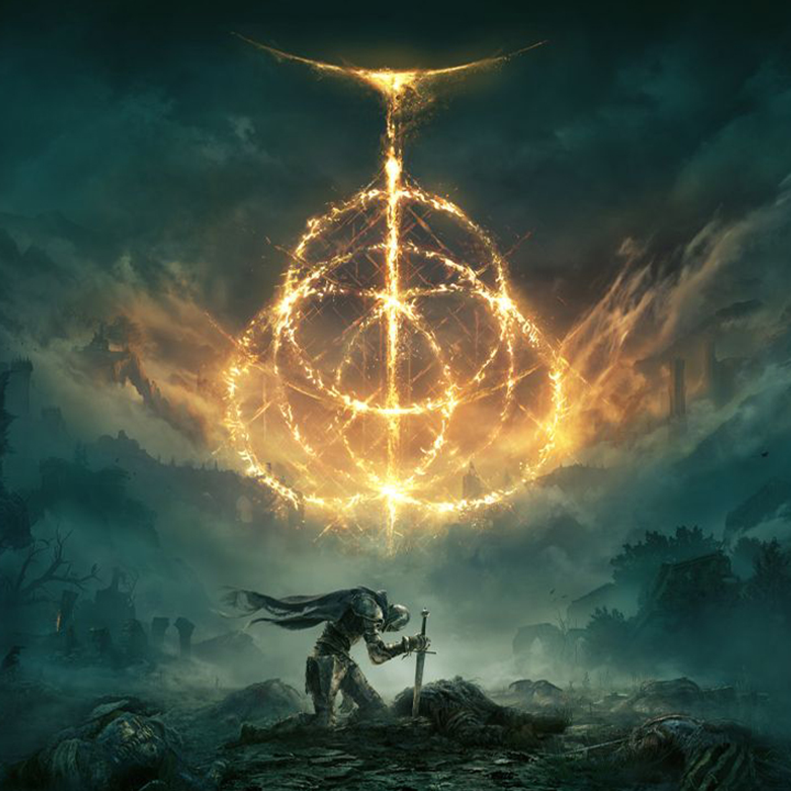

Elden Ring is a 2022 Action RPG developed by FromSoftware. It is directed by Hidetaka Miyazaki, and features worldbuilding from George R. R. Martin. You control a customisable character, on a quest to repair the Elden Ring, and become the new Elden Lord.
Elden Ring is played from an over the shoulder, third-person perspective. It features a large, open map, which is split into segment that you, the player, have to find. As is with all FromSoftware games, Elden Ring features incredibly difficult bosses that can take days to beat.
Elden Ring was released for PC, Playstation and Xbox

Skill issue.